1. Why this project exists
The U.S. National Weather Service's Ocean Prediction Center (OPC) publishes a North Pacific surface analysis chart — the classic map of pressure centers, isobars, and fronts that mariners, pilots, and weather enthusiasts have relied on for decades. OPC issues it at 0, 24, and 48 hours ahead, plus (until recently) 72 and 96 hours ahead too. On June 1, 2026, OPC suspended the 72-hour and 96-hour versions of that chart (per NWS Public Notice PNS 26-41) — the 0/24/48-hour charts are still published normally.
This project reconstructs charts in the same visual style, at all five lead times (0/24/48/72/96 hours), using the same kind of public numerical weather model data OPC's own forecasters would look at. It is a learning tool, not a replacement forecast — the goal is to help you build the skill of reading a surface analysis chart and understanding how the atmosphere's larger-scale patterns (like the jet stream 3–6 km up) connect to the weather at the surface, using the gap left by the suspended 72/96-hour charts as the excuse to build it.
Advanced note
The 0/24/48-hour reconstructions are rendered too, alongside the still-published OPC originals, so you can directly compare this project's method against a real human-drawn analysis at those lead times before trusting anything it produces at 72/96h where no ground truth exists. This is the project's own internal calibration check, not just a display convenience.
2. What the human forecaster does
It's easy to assume OPC's surface analysis is just "the model output, plotted." It isn't. A trained OPC forecaster takes model guidance as a starting point, then actively works the chart before it's published:
- They bring in real observations the models only partly capture — ship weather reports (many merchant vessels radio in conditions), moored and drifting ocean buoys, aircraft reports, and satellite-derived surface winds (scatterometer data). Out over open ocean, these are genuinely sparse — nothing like the dense observation network over land — but they're real, direct measurements, not a model's estimate.
- They apply their own experience of how systems typically evolve in the North Pacific basin specifically — a kind of pattern recognition built from having watched hundreds of similar setups play out before, that no single model run captures.
- They personally identify and label every front — deciding where a boundary actually is, what kind it is, and how it's evolving — using synoptic judgment, not a single fixed formula.
- They cross-check multiple models (not just GFS or just ECMWF, often several more) and reconcile disagreements using judgment, rather than mechanically picking one.
In other words, the real OPC chart is a genuine expert human work product — and that human step is exactly what an automated reconstruction like this one cannot fully replace.
So why build it at all? Because this project has access to the same base model output (and can compute the same kinds of derived fields) a forecaster would have in front of them. That means the reconstruction can do more than just fill the gap left by the suspended 72/96-hour charts — wherever a real OPC chart still exists (0/24/48h), directly comparing it against this project's automated version, built from the same underlying data, is itself a window into what the human forecaster actually changed — where they moved a front from where the raw numbers alone would put it, and (often) why.
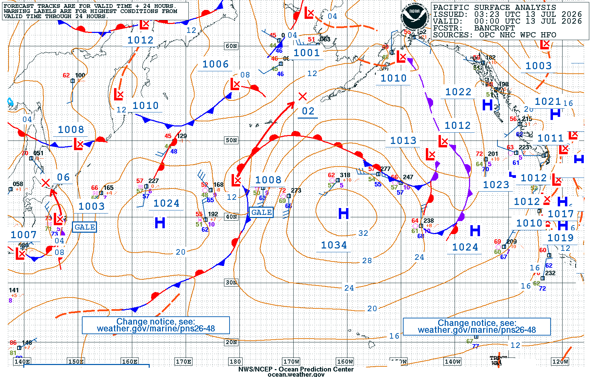
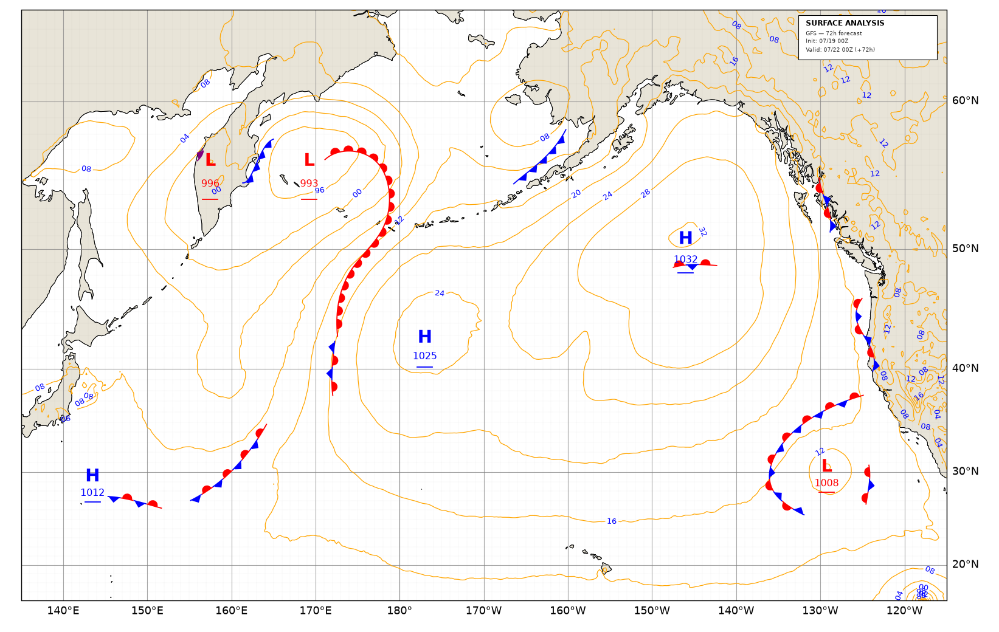
Look closely and compare: where do the two agree closely, and where does the real chart's front placement, or a center's exact position, differ from the automated version? Those differences are a real, visible trace of the forecaster's judgment at work.
Advanced note
This project deliberately does not build its own live observation-ingestion pipeline (ship/buoy/ASCAT) — that's a real, considered scope decision, not an oversight. The reasoning: OPC's own published 0/24/48h chart is already hand-drawn from those same observations, so fetching and displaying OPC's real chart directly (as this project does) already carries their effect into the comparison, without needing a duplicate observation pipeline of our own. What we can't do is have our own automated reconstruction (the 72/96h charts, where no OPC original exists at all) benefit from that same human+observation process — which is exactly the honest limitation stated throughout this guide.
3. Where the charts come from
Three organizations' data feed this project, each doing a different job:
GFS — the American model
The Global Forecast System is the primary global weather model run by NOAA (the U.S. National Oceanic and Atmospheric Administration). It's free, public, and updated four times a day. Think of it as a giant physics simulation: it takes a snapshot of the whole atmosphere right now and calculates forward in time, hours at a stretch, to estimate what the atmosphere will look like days from now.
Advanced detail
This project pulls the 0.25° GFS (gfs.pgrb2.0p25) via Herbie from
NOAA's NOMADS/AWS open-data mirrors, no authentication required. GFS cycles at 00/06/12/18Z; this project
only ever targets the 00Z/12Z cycles, matching OPC's own surface-analysis cadence. Fields pulled: MSLP,
850mb/500mb geopotential height, temperature, u/v wind, relative humidity.
ECMWF — the European model
The European Centre for Medium-Range Weather Forecasts runs its own global model, widely regarded as one of the most skillful in the world. This project uses ECMWF's free, public "open-data" feed of its main high-resolution deterministic forecast.
Advanced detail
Fetched via the ecmwf-opendata client, HRES (the deterministic run, not the ensemble), 0.25°
resolution, 00Z/12Z cycles, published out to 144 hours in 3-hour steps (so 96h is a plain step, not an edge
case). One real cross-model gotcha: ECMWF's vorticity field is relative vorticity while GFS's is
absolute — this project adds the Coriolis term to ECMWF's so both models' vort500
field means the same physical quantity.
Why show two models side by side?
No forecast model is perfect, and different models sometimes disagree — especially the further out in time you look. Showing GFS and ECMWF side by side (and directly differencing them, see the "Difference" panels below) lets you see where the models agree (higher confidence) and where they diverge (lower confidence, worth treating with more caution) instead of trusting a single model's output blindly.
OPC — the real official forecast
The Ocean Prediction Center is the actual NOAA office responsible for these charts professionally. Their surface analysis, 500mb chart, and wind/wave chart are hand-finished by a human forecaster using model guidance plus real observations (ship reports, buoys, satellite-derived winds) and their own judgment — something no automated reconstruction can fully replicate. OPC also issues a plain-text "High Seas Forecast" bulletin describing the same systems in words. Wherever OPC's own chart is still being published (0/24/48h), this project fetches and displays it directly as ground truth, right alongside the reconstruction, so you can compare them yourself.
4. How "the same run" is found
For the reconstructed and real charts to be comparable, they need to describe the same moment in time. The pipeline does this by:
- Fetching OPC's own most recently published Surface Analysis chart image.
- Reading the timestamp printed in its corner (e.g. "VALID: 00Z 13 JUL 2026") — this is just reading printed text off an image, the same as reading a clock face; it never involves guessing a pressure or a front position from the picture.
- Using that valid time to figure out which GFS/ECMWF model run was active at that moment.
- Fetching that one model run and rendering the reconstruction at 0, 24, 48, 72, and 96 hours ahead of it — so every reconstructed chart lines up, lead-for-lead, with where a real OPC chart either exists or would exist.
Advanced detail
Implemented as pipeline.run_opc_aligned. A real operational wrinkle: OPC's slower products
(the forecast ladder, 500mb) take longer to mature than the SA 0h analysis does, so the pipeline
deliberately targets a cycle one full synoptic cycle (12h) older than the freshest one available
— chasing the very freshest cycle was found (empirically, on a live run) to resolve almost everything
as unavailable, simply because it was too early for OPC's own downstream products to exist yet, not because
they were actually missing. Every fetched OPC/GFS/ECMWF artifact's real valid time and lead is independently
checked and classified (exact match, a real but off-nominal offset, or genuinely missing) — never
silently substituted or assumed.
5. Product-by-product guide
Every row on the daily report is one of the panel types below. Each one explains what it shows, how it's derived, and how to use it — listed here in the exact same top-to-bottom order they appear on the report page itself.
Surface Analysis official + reconstruction
What it is: the classic weather map — pressure lines (isobars), High (H) and Low (L) pressure centers, and frontal boundaries (cold, warm, stationary, occluded).
How to use it: Lows generally bring clouds, wind, and precipitation; Highs generally bring clear, calmer weather. Fronts mark the boundary between different air masses and are where most weather action happens — wind shifts, temperature changes, precipitation.
Advanced detail
Isobars are drawn every 4 hPa, labeled with the pressure's last two digits (matching OPC's own chart convention). Centers and fronts are genuinely detected from the gridded field (not hand-placed): centers via local extrema in mean sea-level pressure (MSLP); fronts via the Thermal Front Parameter (TFP) on 850mb equivalent potential temperature (θe) — see §5's "Fronts" concept box for the full method.
MSLP Difference GFS − ECMWF
What it is: GFS's pressure minus ECMWF's pressure, at every point on the map — a direct picture of where the two models disagree, and by how much.
How to use it: Orange means GFS is higher at that point; purple means GFS is lower. A washed-out, pale map means the models agree closely (higher confidence); strong color means they diverge a lot (lower confidence — treat that part of the forecast with more caution, especially at longer leads). The isobars drawn on top of the color fill are GFS's specifically, as the visual reference layer; ECMWF's H/L centers are marked with a small E and drawn semi-transparent so they don't hide GFS's centers where the two nearly coincide.
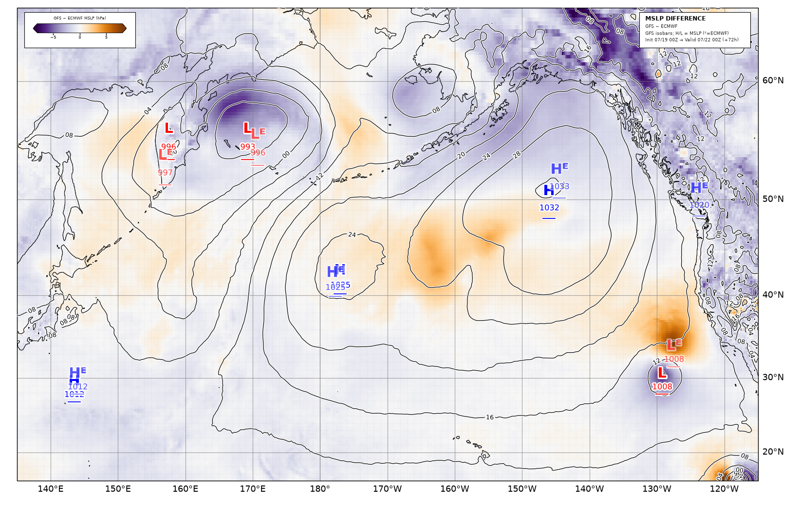
Advanced detail
Diff = GFS − ECMWF exactly, fixed symmetric color scale ±8 hPa (not a per-image percentile)
so panels are directly comparable across leads — set from a real empirical sweep confirming spread
genuinely grows with lead (mean |diff| 0.37 hPa @0h → 1.63 hPa @96h). Colormap is PuOr_r
(reversed Purple-Orange) rather than the more common red/blue diverging scheme, deliberately: this project's
own H/L labels already use red=Low/blue=High everywhere else, so reusing red/blue here would collide with
that established meaning on the same chart.
500mb Analysis official + reconstruction
What it is: a map of the atmosphere about 5.5 km (18,000 ft) up, where the jet stream lives. Instead of pressure, it shows height contours (how high up you have to go to reach 500 millibars of pressure) and wind barbs.
How to use it: Troughs (dips) and ridges (bulges) in the height pattern steer surface systems below them — a surface low usually sits downstream of (ahead of/east of) an upper trough. The bold contour marks the polar/subtropical air boundary, a rough proxy for where the jet stream and storm track sit.
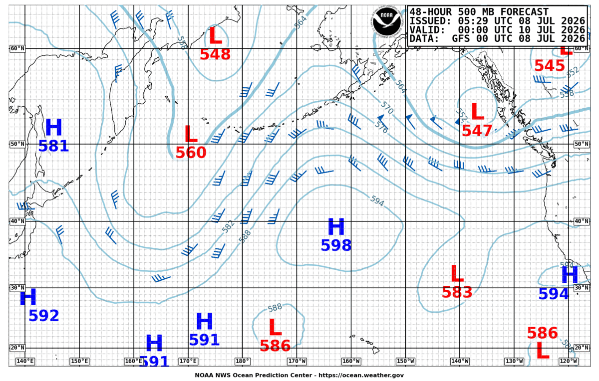
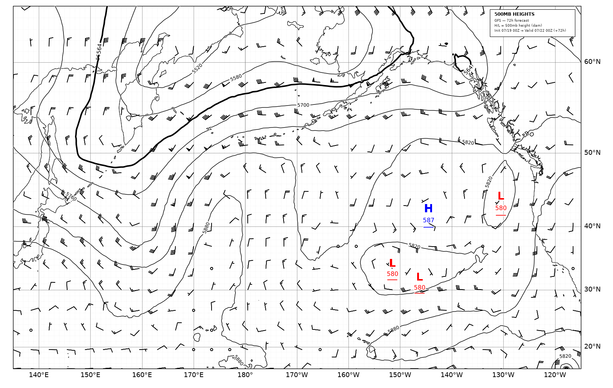
Advanced detail
Height contours drawn every 6 dam (60m), matching OPC's own real 500mb chart convention (confirmed by
direct pixel inspection of a real archived chart). The 564 dam (5640m) contour is bolded — the
standard NWS steering-flow/polar-boundary reference line. H/L labels here show the local 500mb height
extremum itself (e.g. "H 581"), genuinely different from the MSLP-derived H/L labels on the Surface
Analysis panel — centers are detected independently via detect_height_extrema, the same
extrema-finding algorithm as MSLP centers, just applied to z500 instead.
500mb Height Difference GFS − ECMWF
What it is: the 500mb analog of the MSLP difference panel above — GFS's 500mb height minus ECMWF's, at every point.
How to use it: same reading as the MSLP difference panel — orange means GFS is higher (a warmer ridge) at that point, purple means GFS is lower; the strength of the color is a direct confidence signal for the upper-level pattern specifically.
Advanced detail
Diff = GFS − ECMWF exactly, fixed symmetric color scale ±70m, set the same "empirically
swept, not guessed" way as the MSLP diff panel's own ±8 hPa (mean |diff| 6.34m @0h → 16.84m @96h).
Same PuOr_r colormap and reasoning. The bold 564 dam line here is drawn on GFS's own reference
height contours, matching the 500mb Analysis panel's own convention. H/L centers here are 500mb height
extrema (not MSLP) for both models, same as the 500mb Analysis panel above.
Wind/Wave Analysis official only
What it is: OPC's own chart of surface wind barbs and significant wave height. Shown here as the real published image only — not reconstructed.
How to use it: wave height forecasting needs a dedicated ocean-wave model (not the atmospheric GFS/ECMWF fields this project uses), so this row exists purely to show you OPC's real product; building a wave-model reconstruction is out of scope for now.
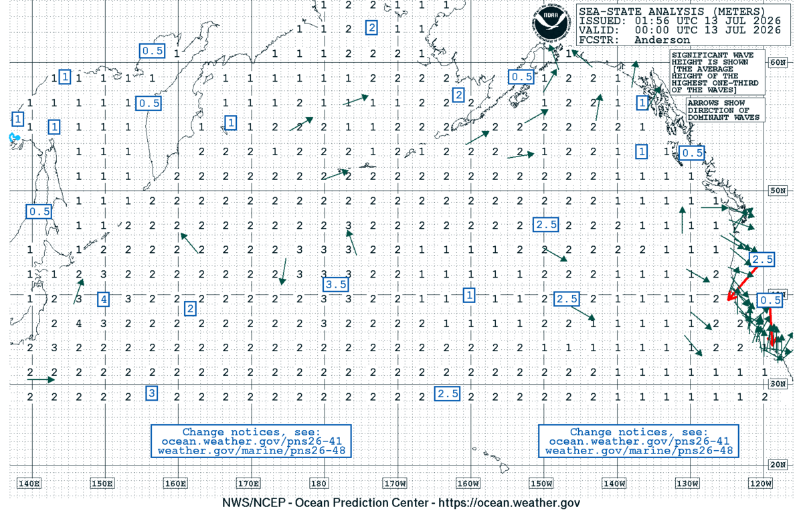
Advanced detail
OPC's wind/wave forecast ladder is issued at 12Z only (not both 00Z/12Z, unlike Surface Analysis) — confirmed over many real cycles with zero exceptions. So on a 00Z-target reference cycle, the 72h/96h cells here read "no data this cycle", not "suspended" — that's this product's real, routine issuance schedule, not a discontinuation. Don't confuse the two: "suspended" is reserved for OPC's genuinely discontinued 72/96h Surface Analysis.
Satellite-Overlaid Surface Analysis official only
What it is: real infrared (IR) satellite imagery from two overlapping geostationary satellites, stitched together and fused with OPC's own surface analysis — a current-conditions snapshot, 0-hour only (there's no such thing as a "satellite forecast," so no lead-time ladder exists for this row — that's structural, not a gap).
Infrared, not moisture: despite the name, an IR satellite image doesn't directly show atmospheric moisture — it measures cloud-top temperature. Colder cloud tops (typically taller, thicker clouds) are shown brighter/whiter; warmer surfaces (clear ocean, low thin cloud) show darker. A front usually shows up as a long, organized band or shield of cloud, caused by air being lifted along the boundary — you're seeing the consequence of the front (the clouds it produces) rather than a direct measurement of temperature or moisture contrast itself. (A different satellite channel, water vapor imagery, does directly show mid/upper-level moisture — that's not what this row displays.)
This is a real, important tool a human OPC forecaster actually uses: seeing an organized cloud band on satellite at the current moment is direct visual evidence of where lifting is happening right now, which can confirm — or sometimes contradict — where a purely numerical, model-field-based method would place a front.
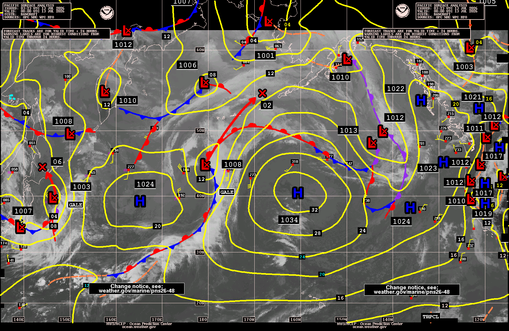
Advanced note — a real, stated gap
This project's own automated front detector (the Thermal Front Parameter method described under "Fronts, in more detail" below) uses only the gridded model thermodynamic field — it does not ingest this satellite imagery as an input at all. The satellite panel is displayed purely for the reader's own visual cross-reference against the detected fronts, the same way a forecaster's own eye would use it, but the algorithm itself doesn't. This is a real, honestly-stated limitation versus what a human forecaster actually does, not a hidden gap.
1000–850mb Thickness reconstruction only
What it is: the vertical distance between the 1000mb and 850mb pressure levels — a proxy for the average temperature of the lowest ~1.5km of the atmosphere (thicker = warmer air, thinner = colder air). This is the low-level layer, not the full 1000–500mb column some other charts use.
How to use it: per the NWS Unified Surface Analysis Manual, “use of the 1000-850 hPa thickness pattern can be helpful in placing frontal zones over bodies of water… with fronts placed on the leading edge of the packing” — look for where the thickness contours bunch up tightly; a front is placed along that leading edge, the same way isobars alone rarely pin down a front's exact position.
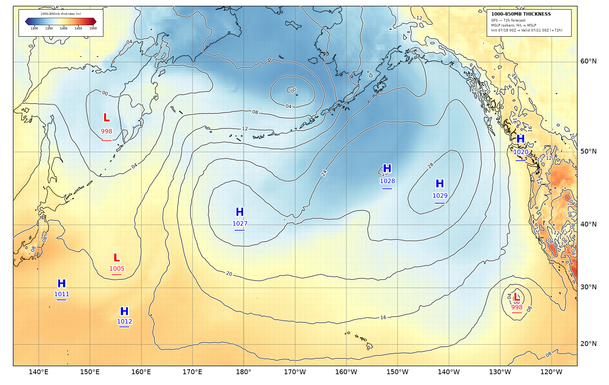
Advanced detail
NWS Unified Surface Analysis Manual, p.16 §5.A “Low Level Thickness Pattern”: 1000–850mb is the recommended layer over open water and flat terrain (the manual's only exception is west of roughly 105°W, where mountainous terrain calls for 850–700mb instead — this project's domain is fully oceanic, so 1000–850mb applies everywhere here). The same manual (p.16 §5) also cautions that model-derived fields like this one “are not used on their own” — cross-check against the MSLP isobars, the front lines, and the other Diagnostics panels before drawing a conclusion. Unlike the 1000–500mb layer, this manual names no single highlighted contour value (e.g. no “540 dam” equivalent) for 1000–850mb, so none is drawn here.
850mb Theta-e reconstruction only
What it is: a filled color map of "equivalent potential temperature" — a single number that combines both temperature and moisture into one value describing an air mass, measured about 1.5 km up (850mb), above most of the surface friction/noise but below where fronts start to slope significantly with height.
How to use it: Look for where the colors change quickly over a short distance — that's a tight air-mass boundary, i.e. roughly where a front is. This shows the same underlying signal a detected front line commits to, but continuously, without forcing a single line onto something that's really a gradual (if sometimes sharp) transition.
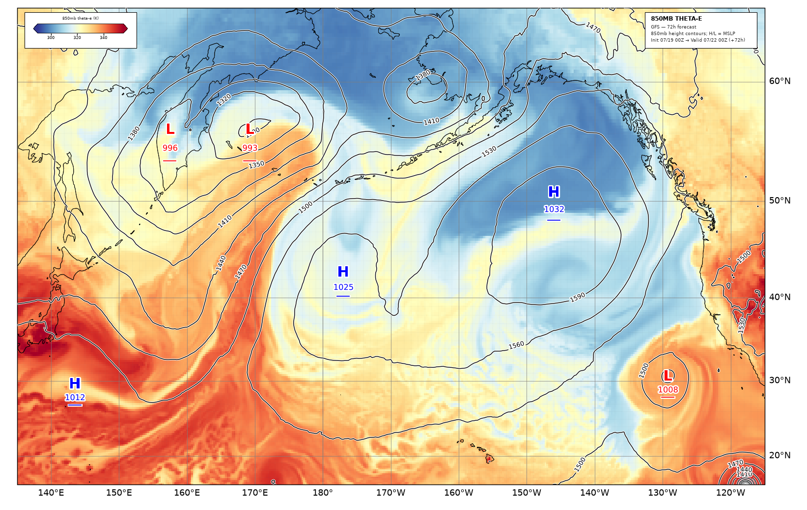
Advanced detail
Fixed color scale 290–355K (VMIN/VMAX), derived from a real empirical sweep with headroom past the observed p1/p99 range. Black contours overlaid are 850mb geopotential height (not MSLP) — the internally-consistent constant-pressure-chart convention for an 850mb field. H/L labels shown, if any, stay MSLP-derived on purpose: the offset between a surface low and its 850mb reflection is itself a real baroclinic-tilt signal (see §5), not a mismatch to paper over.
850mb Theta-e Gradient Magnitude reconstruction only
What it is: literally "how strong is the temperature/moisture gradient right here" — the exact same quantity the automated front detector measures internally, shown as a continuous field instead of committing to a line.
How to use it: the brightest bands are the strongest air-mass boundaries on the whole map — a direct, honest look at the raw signal an automated front line is built from, letting you judge for yourself whether a detected front "looks right."
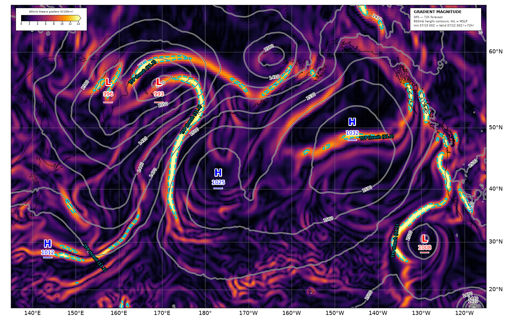
Advanced detail
Fixed scale 0–14 K/100km. The NWS Unified Surface Analysis Manual's own literal operational front definition is a minimum thermal gradient ("~6°C over 500km, smaller over oceans") — this panel is exactly that quantity, continuously. The dashed cyan line is this specific image's own detector threshold value (self-labeled), not a fixed display scale — and is the strict global threshold only, not the locally-relaxed near-low threshold the real detector also uses (see §5).
Frontogenesis reconstruction only
What it is: not a position, but a rate — is the temperature gradient at this point getting sharper (a front intensifying) or weaker (a front dying out) right now?
How to use it: Red/positive means intensifying (frontogenesis); blue/negative means weakening (frontolysis). This is the complement to the theta-e panel above: theta-e shows where air masses sit, frontogenesis shows whether the boundary between them is actively sharpening.
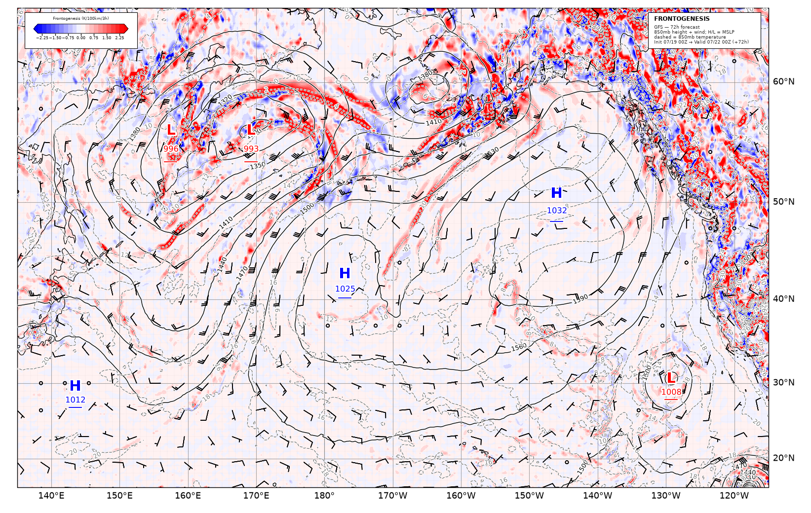
Advanced detail
Petterssen frontogenesis on plain potential temperature (not theta-e — the classical formulation
needs plain θ), computed via MetPy's mpcalc.frontogenesis (shearing/stretching/total
deformation + divergence). Zero-centered fixed scale ±2.5 K/100km/3h, retuned down from an initial
sweep-derived 4.0 after real rendering showed that value washing out genuine signal — this project's
real North Pacific oceanic case is notably weaker than the reference literature example's own cited range.
Overlay matches the cited Project Pythia notebook's full convention: 850mb height, 850mb temperature, and
wind barbs, replacing MSLP entirely on this one panel.
Vorticity 850mb reconstruction only
What it is: relative vorticity (ζ = ∂v/∂x − ∂u/∂y) at 850mb — a signed measure of local spin in the wind field, positive (red) for cyclonic (counterclockwise) rotation, negative (blue) for anticyclonic (clockwise). Computed fresh from the 850mb wind field, not the dormant absolute-vorticity field this project's own GridField contract also carries for a different, still- unbuilt purpose.
How to use it: cyclonic spin concentrates around lows and along active fronts; anticyclonic spin concentrates around highs/ridges. This panel doesn't feed the front detector today — it's an eventual dynamical criterion, currently on hold (see §6 below) — shown here as its own standalone diagnostic in the meantime.
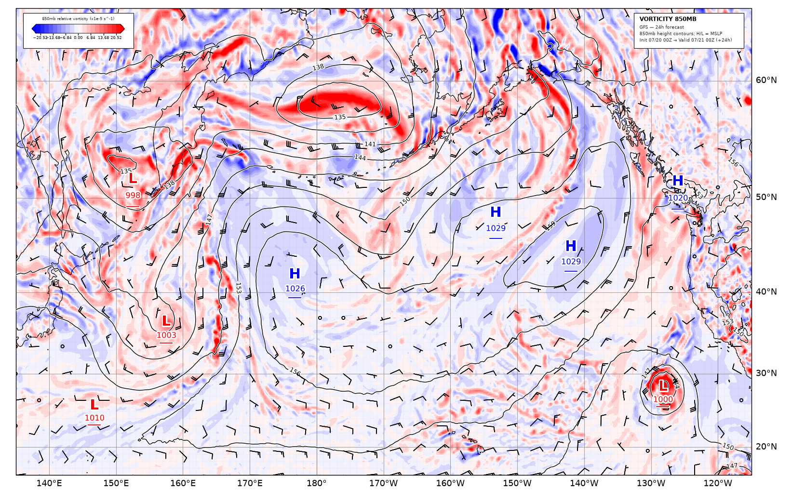
Advanced detail
Overlay is 850mb height contours (30m interval, decameter labels, e.g. "144") + 850mb wind barbs; H/L center labels are MSLP-derived, not 850mb-height-derived — the offset between an MSLP low and its 850mb vorticity maximum is itself a real baroclinic-tilt signal, not a mismatch. Fixed diverging scale ±22.8×10−5 s−1, empirically swept from real cached data.
Vorticity 500mb reconstruction only
What it is: the same relative-vorticity quantity as the 850mb panel above, computed instead from the 500mb wind field — where the mid-tropospheric flow itself is spinning.
How to use it: watch for cyclonic vorticity increasing just ahead of a trough axis (visible on the 500mb Analysis panel above) — that's often the upper-level signature driving new surface development below it, part of the surface↔500mb coupling story (see §6).
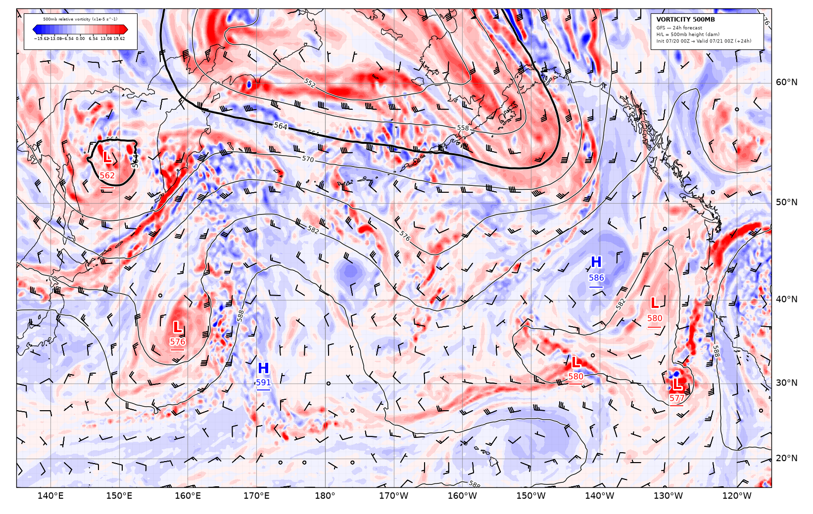
Advanced detail
Overlay is 500mb height contours (60m interval, decameter labels, plus the bolded 564 dam line) + 500mb wind barbs; H/L center labels here ARE 500mb-height-derived (dam), the one real exception to this project's MSLP-labeled convention everywhere else — matching the existing 500mb Analysis panel's own convention. Fixed diverging scale ±21.8×10−5 s−1. This panel visibly overlaps the 500mb Analysis panel above (both show height contours/barbs at the same level) — standard practice, not a mistake: the two panels are deliberately meant to be read together.
Sea Surface Temperature reconstruction only
What it is: GFS's own NSST surface-temperature analysis and ECMWF's own OSTIA-derived surface analysis, plotted as a continuous filled field.
How to use it: watch the coastal and current-boundary gradients (like the California Current) — sharp, persistent lines here are real ocean features, worth knowing about in their own right. A GFS−ECMWF difference panel is also available (toggle "Show ECMWF & model differences" on the daily gallery) — unlike this project's other model-difference panels, that diff is genuinely informative rather than mostly noise, since NSST and OSTIA are independently-produced analyses, not two forecasts of the same atmosphere.
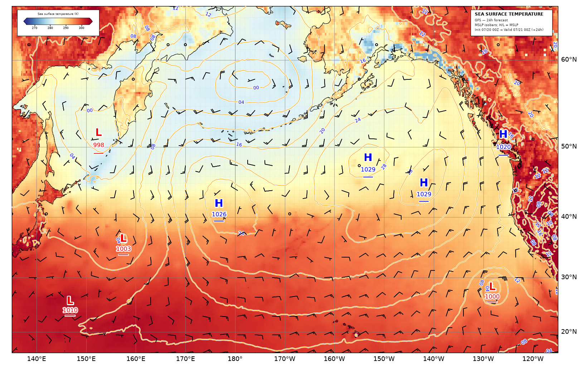
Advanced detail
Overlay is MSLP isobars + 10m wind barbs + MSLP-derived H/L centers. Fixed scale 265–305K (≈−8°C to 32°C) — the lower bound deliberately sits well below the real summer sweep this project's own constants were derived from, since this domain's 65°N edge sees real winter sea-ice-adjacent temperatures a mid-July sweep alone can't see; the upper bound clips real Mojave-desert land-surface skin temperatures (not ocean at all) rather than compressing the real oceanic dynamic range to accommodate them.
6. Core concepts
H/L centers, in more detail
Every High and Low label on this project's charts comes from a genuine local extremum in the mean sea-level pressure (MSLP) field — nothing is placed by eye or copied from OPC's own chart.
Advanced detail
Method: a local minimum/maximum filter (scipy.ndimage.minimum_filter /
maximum_filter, window sized to a real-world 4° radius) flags every grid cell that equals
its own neighborhood's extreme value. A second, wider filter then checks prominence
— how far that point stands out from the opposite-kind background over a larger
neighborhood (for a low: how much lower it is than the highest point nearby), not just whether it's
locally flat — and only extrema clearing 2.0 hPa of prominence survive. A final greedy
non-max-suppression pass, strongest-first, collapses any cluster of surviving candidates within 4°
of each other down to one representative. That last step exists for a real, confirmed reason, not a
theoretical one: GRIB's own value quantization can pack six or more adjacent grid cells to one exact
tied MSLP value, which the equality-based extremum test above reads as six separate centers for a
single physical low. Filter results within one filter-radius of the domain edge are discarded outright
rather than reported, since edge-padding (mode="nearest") can fabricate spurious prominence
right at the boundary. Confidence is clip(prominence_hPa / 20.0, 0.3, 1.0) — a
20 hPa-prominent center reads as maximally confident, a barely-qualifying 2 hPa one reads near
the floor.
Fronts, in more detail
What is a front? Picture two air masses sitting side by side — one warmer/moister, one colder/drier. They don't blend instantly; instead they're separated by a real, physical boundary that can stretch a thousand miles across the ocean. That boundary is a front. Fronts matter because almost all the "action" on a weather map happens right at them: wind suddenly shifts direction, the temperature changes noticeably in a short distance, clouds thicken, and precipitation is far more likely right along the boundary than on either side of it. A front isn't a flat vertical wall, either — it slopes, often quite gently, so that warm air rides up and over the retreating cold air (or vice versa) well ahead of where the front actually reaches the ground.
| Symbol | Type | Meaning |
|---|---|---|
| Blue triangles | Cold front | Cold air is actively advancing, pushing warm air up and out of the way. |
| Red scallops | Warm front | Warm air is advancing over cooler air ahead of it. |
| Alternating red/blue | Stationary front | Neither air mass is winning — the boundary is (roughly) parked in place. |
| Purple alternating | Occluded front | A cold front has caught up to a warm front, lifting the warm air mass off the ground entirely — usually a sign a storm system is mature and starting to weaken. |
Automatic front detection is a genuinely hard problem
It might look like drawing a front should be simple — just find where the temperature changes fastest. In practice, deciding exactly where one air mass ends and another begins, and whether that boundary deserves to be called a front at all, is a real, actively-studied problem in meteorology, not a solved textbook exercise. Different reasonable choices (which field to measure, how much to smooth the data first, how sharp a gradient counts as "a front" versus normal day-to-day variation) can each produce a visibly different set of lines from the exact same underlying data. This project is upfront about that: the automated fronts you see are one reasonable, defensible method's output — not the single objectively correct answer.
Advanced detail
Fronts here are objectively diagnosed via the Thermal Front Parameter (TFP; Hewson 1998) on 850mb θe, not hand-placed. This project's own algorithm already implements Hewson's own preferred ordering — tracing the continuous TFP=0 contour FIRST (via real marching-squares contour tracing), then filtering those traced points by gradient-magnitude strength SECOND ("contour-then-mask," not the more fragile threshold-then-connect-neighboring-cells approach some simpler implementations use). Cold/warm typing comes from the 850mb wind component projected onto the local θe gradient (the TFP dipole convention: negative = warm side, positive = cold side) — wind blowing toward the warm side means cold air is advancing (cold front), and vice versa for warm fronts; near-zero cross-front wind is typed stationary. Occluded fronts use a proximity + type-transition heuristic (a stationary-front run sandwiched between a cold-front run and a warm-front run on the same line, within 300km of a detected low) rather than a genuine two-level thermodynamic diagnosis, which would need atmospheric data (e.g. 700mb) this project doesn't currently fetch for either model. A known, measured limitation, explored in full below: detected fronts sit systematically further from their nearest low than a real attached front typically does.
The physical basis: why θe, why 850mb, and what TFP actually measures
Equivalent potential temperature (θe) is not the same thing as ordinary temperature. It's the temperature a parcel of air would have if you condensed out all of its water vapor (releasing the latent heat that condensation gives off) and then brought the parcel dry-adiabatically down to a fixed reference pressure — a single number that folds both temperature and moisture into one conserved-ish quantity. That matters specifically for an ocean-basin project: over open water, the sharpest, most reliable air-mass boundary is very often a moisture contrast as much as (or more than) a temperature contrast — two air masses at nearly the same temperature but very different humidity are still a real front. A detector that only looked at plain temperature would miss exactly that case; θe doesn't.
850mb (roughly 1.5km up) is used rather than the surface for a practical reason: it sits just above the marine boundary layer, so the field is free of surface friction, diurnal heating, and the small-scale noise that afflicts a raw 10m or 2m field, while still low enough to carry the front's own real thermal signature (a front's slope means its surface position and its 850mb position aren't identical, but they're close, and 850mb is calm enough to actually differentiate).
The Thermal Front Parameter itself is the directional derivative of the gradient magnitude, taken along its own steepest-descent direction:
TFP = −∇|∇θe| · (∇θe / |∇θe|)
Its zero-crossings sit exactly on the ridge line of the gradient-magnitude field — the single sharpest point across a transition, not just "somewhere the gradient is above some cutoff." That's the actual reason TFP, not a plain gradient-magnitude threshold, is the objective definition of "where the front is" in this literature: a gradient threshold alone would mark an entire wide band as "frontal," while TFP's zero-crossing picks out the one line running through the middle of it.
Step by step, for replication
- Smooth θe before differentiating at all. Differentiating a raw, grid-noisy field
twice in a row (once for the gradient, once again for TFP) amplifies noise badly. A fixed number of 3×3
uniform-filter passes (
scipy.ndimage.uniform_filter(field, size=3, mode="nearest")) is applied first — see the threshold table below for exactly how many passes, and why the literature's own recommended value turned out to be measurably wrong for this project's real data. - Compute the gradient on the sphere, not the grid. Central differences in latitude/
longitude are converted to per-meter units via the Earth's radius, with longitude additionally scaled by
cos(latitude)so a degree of longitude means the correct, shrinking real distance at high latitude. - Trace the TFP=0 level as real, continuous polylines FIRST — matplotlib's own
contour tracer (
Axes.contour(lon2d, lat2d, tfp, levels=[0.0])) on a throwaway, never-displayed figure, thenpath.to_polygons(closed_only=False). This is the "contour-then-mask" step: it guarantees clean, ordered, non-self-overlapping lines before any strength filtering happens. - Mask by gradient-magnitude strength SECOND, interpolating the (already-computed) gradient magnitude back onto each traced line's own points and keeping only the sub-runs that clear a threshold — itself a percentile of the whole field's own gradient distribution, not a fixed physical number (see the table below for why).
- Filter by real-world length, using the haversine great-circle formula on each surviving run, not grid-point count — the two aren't comparable once lines come from continuous tracing.
- Type each surviving run by projecting 850mb wind onto the local θe gradient direction at every point, smoothing that cross-front wind along the line with a short moving average (5 points) to damp point-to-point noise without erasing a genuine sign change partway along a run, then classifying against a fixed m/s threshold.
- De-duplicate: any two surviving lines whose median nearest-point distance falls under a threshold are treated as the same real front detected on both edges of its own gradient band, and only the stronger one (by mean gradient) is kept.
- Score confidence as
clip(mean_gradient / (2 × mean_threshold), 0.3, 1.0)— how far above the threshold it actually had to clear a front's own gradient sits — with a flat 0.7 multiplier for stationary/occluded fronts, the two hardest to type confidently from wind alone.
| Parameter | Value | Why (measured, not guessed) |
|---|---|---|
| Gradient threshold percentile | 98th | A fixed K/100km cutoff isn't robust across seasons — real July Pacific background gradient sits around 3–4 K/100km, so a low fixed number barely filters anything. Gated on the field's own upper percentile instead. |
| Smoothing passes | 4 | The literature's own ERA5-tuned value (8 passes) fixed duplicate-edge detections but, measured on real data, over-eroded the tight gradient near a low's own circulation (median front-to-low distance ~1,200km at 8 passes). Sweeping 1–8 found 3–4 holds the duplicate-edge fix while nearly halving that distance; 1–2 reintroduces fragmentation. |
| Minimum segment length | 350km | Matches how many fronts a real OPC analysis actually draws per basin — a handful, not dozens of short fragments. |
| Deduplication distance | 350km | A confirmed real duplicate pair (same gradient band, two edges) sat ~266km apart; distinct real fronts in the same render sat ~4,675km apart. 350km sits with wide margin on both sides of that real gap. |
| Wind-shift threshold | 3.0 m/s | Cross-front wind component above which a front counts as actively advancing rather than stationary. |
| Near-low relaxation radius / percentile | 650km / 65th pct | Lowering the global threshold to admit weak-but-real fronts near a low also floods the whole domain with noise elsewhere (12→57 fronts, real data). Relaxing only within 650km of a detected low roughly halves median front-to-low distance (954→484km) while the maximum distance across the whole sweep never moves — the relaxation stays local. |
| Occlusion radius / min length | 300km / 50km | 68 real cold–stationary–warm sandwiches were found across 10 real grids; the distance-to-nearest-low split was genuinely bimodal — 21 within 300km, the rest 400–2,800km and clearly unrelated to any low. |
| Cross-model match radius | 350km | Real cross-model front pairs were swept 150–1,000km with no sharp knee in the match-rate curve (unlike deduplication above); 350km reuses this project's own already-established same-feature distance rather than inventing a second number. |
Real pitfalls found during development
The front-to-low gap was directly attacked, and honestly measured to get worse. A mechanism was built to extend an already-detected front's own outer boundary further along its own real raw contour line toward the nearest low — using only already-traced points, never fabricating new geometry — and tested twice, independently. Both attempts measurably made the aggregate gap worse, not better (857.9→933.5km median in the more careful of the two attempts). The root cause, found by a third measurement with deduplication disabled entirely: the extension promotes marginal, previously-too-short line segments over the minimum-length floor purely by adding length, and those newly-admitted segments are on average farther from a low than the population that survives without the extension. "Some real gradient signal toward the globally nearest low" turned out to be a measurably weaker criterion than "genuinely attached to a specific low." The mechanism is kept in the codebase, off by default, specifically so this negative result and its real numbers aren't lost to a future attempt repeating it.
A single invalid cell once silently zeroed an entire grid's fronts. One bad negative
relative-humidity value in a real ECMWF pull produced one NaN in θe850, which poisoned a plain
percentile calculation to NaN for the entire gradient threshold — because Python's
max(nan, floor) returns NaN, not the floor. That NaN threshold then failed every point's
strength comparison, silently discarding every real front on the grid even though the underlying signal was
genuinely there. Fixed at the source (clipping relative humidity to a valid range before the dewpoint
calculation) and defensively (a NaN-aware percentile). A related, only partially closed gap: the smoothing
filter's own running-sum implementation was found to corrupt every cell from a NaN's position onward
in scan order, not just its local neighborhood — full NaN-aware smoothing remains unbuilt.
Front symbol orientation was wrong, then partially wrong again. Every polyline's point order is meaningful once it reaches the renderer — the actual triangle/scallop symbols draw relative to point order alone, with no built-in sense of which side is warm. The first fix was calibrated by looking at one rendered cold front and one rendered warm front and concluding they draw on opposite sides, so a single "warm on the left" rule would orient both at once. That was wrong, caught only when warm fronts specifically were reported looking backwards, and only actually resolved by reading the rendering library's own symbol-path source directly: cold and warm front symbols in fact draw on the same default side, while stationary fronts genuinely do flip sides. The lesson generalizes past this one bug: any correctness question that depends on a sign convention or a drawing library's internal behavior needs a computational check, not a visual one — the same failure mode recurred later in this project (ASCAT wind-direction convention, also caught backwards by eye, also only resolved by a quantitative check).
Machine learning alternatives exist, but aren't used here. Academic research (e.g. Niebler et al. 2022) has trained CNN-based frontal detectors with real, promising results. This project evaluated that route and passed on it: the only detector found with published pretrained weights has been unmaintained since 2021, requires a heavier ERA5 model-level input dataset than the pressure-level GFS/ECMWF data this project already fetches, and has no verified transfer to this project's actual data. Rather than bolt on an unmaintained black box, this project fixed real, specific bugs in the classical numerical method instead (duplicate-edge detections, front-to-low detachment) and documents its remaining limitations openly, as above.
Four further refinements were built and tested; one has since been adopted into
production, the other three remain comparison-only. A separate, isolated experimental detector
(never imported by the live daily gallery) implements: (1) an alternative thermal field, wet-bulb
potential temperature (θw — the academic literature's more common choice) instead of this
project's own θe (which the NWS manual specifically endorses for oceanic domains — a genuinely
open, unresolved tension, not settled here); (2) front-translation-speed ("K3") classification, projecting
the 850mb wind onto the gradient-magnitude field's own rate of change, against two independently-sourced
speed thresholds (the literature's ~1.5 m/s and the NWS manual's own stationary-front definition, ~5.1 m/s,
converted from its literal "10 knots") — K3's own formula has a real, disclosed sign ambiguity: it
doesn't cleanly separate "cold air advancing" from "warm air advancing" on its own, since the relevant
derivative right at a front line is dominated by its along-front component, not its cross-front one, so the
experimental implementation borrows the wind-shift method's own sign for direction and uses K3 only for
magnitude (moving vs. stationary) — a disclosed simplification, not a resolved physics question;
(3) cross-model (GFS/ECMWF) agreement as an additional confidence
signal, an idea original to this project with no literature precedent; (4) literature-derived quantile
threshold recalibration (25th/50th percentile anchors) against this project's own real-data-tuned 98th/65th
percentiles. Of these, only (3) — cross-model agreement — has been promoted into the production
detector shown throughout this page: a front's confidence is boosted (in src/reconcile/
multi_model_agreement.py) when GFS and ECMWF independently detect the same front type within
~350km of each other, a purely additive change (it never alters what geometry gets drawn, only how
confidently it's presented) with no ground-truth data available to argue against it. (1), (2), and (4)
remain sensitivity-page-only comparisons, not adopted, since none has clear grounds to prefer over
production's own already-tuned choices — there's no real-analyst ground truth to judge them against.
See the Sensitivity Analysis page to compare all four against production
(and the real ground-truth OPC-published chart) directly on real rendered charts — that page's own
"How to read this page" box explains each toggle/parameter in full; briefly, its swept grid always uses K3
front-speed classification, not production's own wind-shift method, so no grid cell there exactly
reproduces production's output even at matching percentile settings.
Open questions, honestly left open rather than papered over: the front-to-low gap above has a known, better-scoped next step — a reconcile-stage matching step that pairs already- detected fronts to already-detected lows as a confidence/metadata annotation (the same "annotate, never mutate" shape multi-model agreement already uses) rather than altering any detected geometry — not yet built. Quantile recalibration remains a genuinely open evaluation gap, not a rejected idea: there is still no ground-truth analyst record to judge the literature's own more permissive percentiles against one way or the other. And a more rigorous dynamical (shear + trough) confirmation step, discussed in early research but not attempted, would be the first genuinely new diagnostic axis added to this detector since its original build, rather than a further retuned threshold on the existing one.
Fronts: the human side
Everything above is the algorithmic side. A real OPC forecaster draws fronts by hand, using many of the same underlying signals (temperature/dewpoint gradients, wind shift, pressure tendency) but also real judgment this project's automated detector doesn't have — satellite cloud structure, upper-air soundings, and experience with how a given synoptic pattern typically behaves. The NWS Unified Surface Analysis Manual (this project's own primary source, linked at the top of this page) is candid that this is a genuinely subjective exercise: "surface analyses are subjective in nature, and even skilled analysts can show marked differences in their analyses" (p.4, citing Uccellini et al. 1992). The manual's own literal front definitions are worth knowing directly, not just as this project's own paraphrase of them: a cold front needs "a minimum of 6°C (10F) over 500 km (300 nm)... with smaller differences needed over the oceans" (p.19); a stationary front is "the equatorward edge of a slow-moving density discontinuity with a motion of less than 10 knots (12 mph)" (p.22) — the same 10-knot figure used as one of the two K3 speed anchors above. Reading the algorithm and the human definition side by side is worth doing deliberately: the math is a real, defensible attempt at the same judgment call a forecaster makes by eye, not a replacement for understanding what that judgment call actually involves.
Surface ↔ 500mb coupling
Surface weather doesn't happen in isolation — it's steered and powered by the pattern several kilometers up. A classic developing storm has its upper-level trough positioned behind (upstream/ west of) its surface low — this "tilt" is what lets the storm keep drawing energy and intensifying. As a storm matures, the upper trough catches up and the system becomes vertically "stacked" (aligned straight up and down) — once that happens, the storm has lost its main energy source and begins to weaken. "Stacking = death" is the classic shorthand for this idea.
Advanced detail
This project surfaces the tilt/stacking signal directly: the theta-e/gradient-magnitude/frontogenesis panels intentionally keep their H/L center labels MSLP-derived while overlaying 850mb height contours underneath — the horizontal offset between a labeled surface low and the 850mb trough/low beneath it is the tilt signal, made visible by design rather than computed as a separate derived quantity.
Two families of surface lows
Not all low-pressure systems are built the same way. Cold-core lows — the ordinary mid-latitude storms this project's charts mostly show — form along the boundary between air masses (fronts), are powered by the jet stream, and actually get stronger with height up toward the tropopause. Warm-core lows — tropical cyclones being the clearest example — have no fronts, are powered by warm ocean moisture instead, and weaken with height. Recognizing which kind of low you're looking at tells you what to expect from it.
Model spread as a confidence signal
When GFS and ECMWF agree closely, that's a real (if imperfect) signal that the forecast for that feature is more trustworthy. When they diverge, that's a signal to hold that part of the forecast more loosely — not that either model is "wrong," but that the true range of possible outcomes is wider than either single model alone would suggest.
7. Honesty & limitations
This is a reconstruction, not an official forecast. A few things worth keeping in mind:
- No human forecaster's judgment is in this loop — every feature traces to a deterministic calculation on gridded model data, nothing is inferred by looking at an image.
- Uncertainty grows with lead time. The 0-hour chart is checked directly against OPC's real analysis; by 72–96 hours, both the underlying model forecast and the automated feature detection carry real, compounding uncertainty.
- Front detection has a known, measured rough edge (see §5) — not hidden, tracked openly in this project's own build history.
- The "suspended" vs. "no data this cycle" distinction on the report matters: the former means OPC genuinely stopped publishing something; the latter means this particular product simply isn't due yet on this particular cycle — conflating the two would be dishonest about which is which.